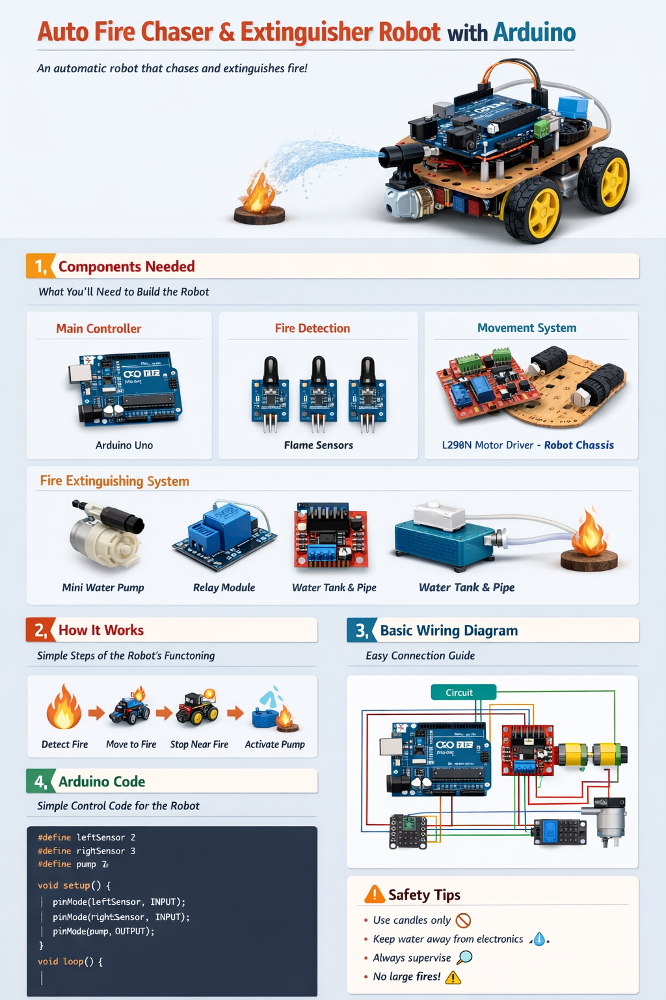

A smart Arduino-based robot that detects flame, moves toward the fire source, and activates a small water pump to extinguish it automatically.

#define leftSensor 2
#define centerSensor 3
#define rightSensor 4
#define pump 7
void setup() {
pinMode(leftSensor, INPUT);
pinMode(centerSensor, INPUT);
pinMode(rightSensor, INPUT);
pinMode(pump, OUTPUT);
pinMode(8, OUTPUT);
pinMode(9, OUTPUT);
pinMode(10, OUTPUT);
pinMode(11, OUTPUT);
digitalWrite(pump, LOW);
}
void loop() {
int left = digitalRead(leftSensor);
int center = digitalRead(centerSensor);
int right = digitalRead(rightSensor);
if (center == LOW) {
stopMotors();
digitalWrite(pump, HIGH);
delay(3000);
digitalWrite(pump, LOW);
}
else if (left == LOW) {
turnLeft();
}
else if (right == LOW) {
turnRight();
}
else {
forward();
}
}
void forward() {
digitalWrite(8, HIGH);
digitalWrite(9, LOW);
digitalWrite(10, HIGH);
digitalWrite(11, LOW);
}
void turnLeft() {
digitalWrite(8, LOW);
digitalWrite(9, HIGH);
digitalWrite(10, HIGH);
digitalWrite(11, LOW);
}
void turnRight() {
digitalWrite(8, HIGH);
digitalWrite(9, LOW);
digitalWrite(10, LOW);
digitalWrite(11, HIGH);
}
void stopMotors() {
digitalWrite(8, LOW);
digitalWrite(9, LOW);
digitalWrite(10, LOW);
digitalWrite(11, LOW);
}